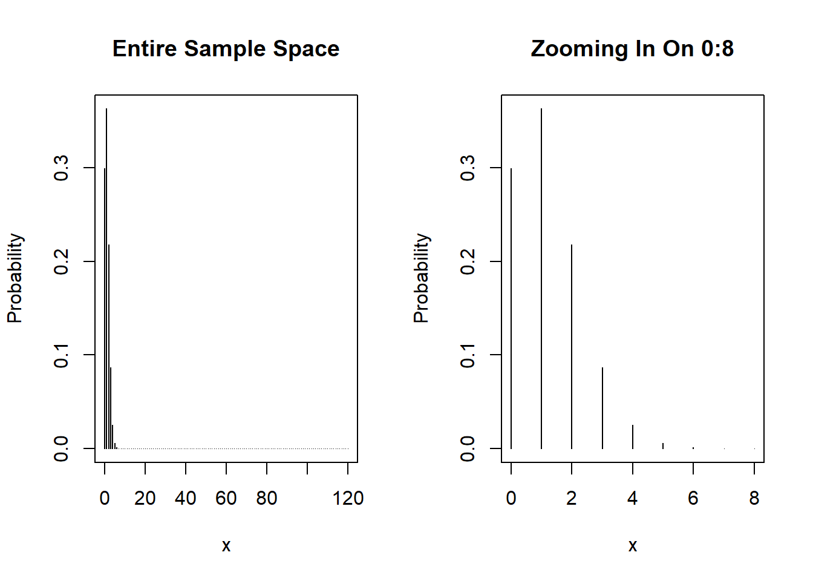

Code
dbinom(x=3, size=120, prob=0.01)[1] 0.08665163Alex Kaizer
University of Colorado-Anschutz Medical Campus
This page is part of the University of Colorado-Anschutz Medical Campus’ BIOS 6618 Recitation collection. To view other questions, you can view the BIOS 6618 Recitation collection page or use the search bar to look for keywords.
R has many distributions built in (see ?distribution). Most of these distributions have four unique functions to calculate different quantities that may be of interest:
dxxx: probability mass/density function (i.e., \(f(x) = P(X=x)\))pxxx: cumulative distribution function (i.e., \(F(x) = P(X \leq x)\))qxxx: quantile function representing the inverse of the cumulative distribution function (i.e., \(x = F^{-1}(P(X \leq x))\) )rxxx: random variate generationLet’s consider both the standard normal distribution (i.e, \(N(0,1)\)) and the binomial distribution (with \(n=120\) and \(p=0.01\) from above) as examples.
dnorm, dbinomFor discrete distributions, like the binomial, the dxxx function provides the probability for a given combination of parameters without having to calculate the probability mass function by hand. For example, we see that using dbinom results in the same probability we calculated by hand above:
We can use it to plot the overall PMF as well:
par(mfrow=c(1,2)) # create panel with 1 row, 2 columns
# Plot entire range
cases <- 0:120
plot(cases, dbinom(x = cases, size=120, prob=0.01), type='h', xlab='x', ylab='Probability', main='Entire Sample Space')
# Plot 0:8 to better see positive mass
cases_sub <- 0:8
plot(cases_sub, dbinom(x = cases_sub, size=120, prob=0.01), type='h', xlab='x', ylab='Probability', main='Zooming In On 0:8')
For continuous distributions the dxxx functions are not as useful since we know that the probability calculations occur over a range of values and technically \(P(X=x)=0\). However, using dnorm will return the height of the probability density function, which is useful in creating a plot of the PDF:
pnorm, pbinomIf we instead wanted to calculate the cumulative probability up to some point instead of either the probability (discrete) or density (continuous), we could use the pxxx family of functions.
For example, if we wanted to know the probability of observing 3 or fewer cases of sarcoidosis we could either add 4 separate dbinom functions or use pbinom:
[1] 0.9670151[1] 0.9670151For the normal distribution, we can now calculate actual probabilities. Below we calculate the \(P(X \leq 1.96)\) and the \(P(-0.5 \leq X \leq 0.5)\) using pnorm:
qnorm, qbinomIf we were interested in calculating the inverse of the CDF (i.e., what is the value of \(x\) so that a given percent of the distribution falls below it), we would use qxxx. For discrete distributions this is not always super useful since a given quantile may not fall exactly on the sample space:
For continuous distributions it is more useful because (1) they can take on any value in a given range, which may include infinity, and (2) we will need to calculate values in the future for use in confidence intervals where we want to identify the quantity that achieves a \(1-\alpha\) confidence interval. For the standard normal distribution we may wish to see the value of \(x\) that has 97.5% of the PDF below it (i.e., the CDF would be 0.975):
Look at that, it matches pretty closely to our pnorm(q=0.1.96) from above!
rnorm, rbinomWe’ve already been working to simulate data on HW, in lecture, and lab, but the rxxx functions simulate random data to use in calculations, simulation studies, etc.
For rbinom, it is helpful to be aware of the arguments (since we call it \(n\) in the PMF but size in function). n represents the number of simulated covariates we wish to generate from a binomial distribution with a given number of trials in each study represented by size. The easiest way to see the difference is to simulate some data and flip the n and size values:
[1] 1 0 1 0 0 0 0 0 0 1[1] 5The first rbinom(n=10, size=1, prob=0.5) produced ten simulated trials (since size=1 implies \(x \in (0,1)\), or that our observed outcome in each trial is either a 0 or 1).
The second rbinom(n=1, size=10, prob=0.5) produced one simulated trial with up to 10 events (since size=10 implies \(x \in (0,1,2,...,10)\)). In this case the simulated trial had 5/10 events observed.
We can see that if we specify a larger n, the number of observed events varies:
---
title: "Distribution Functions in R (e.g., dnorm, qnorm, pnorm, rnorm)"
author:
name: Alex Kaizer
roles: "Instructor"
affiliation: University of Colorado-Anschutz Medical Campus
toc: true
toc_float: true
toc-location: left
format:
html:
code-fold: show
code-overflow: wrap
code-tools: true
---
```{r, echo=F, message=F, warning=F}
library(kableExtra)
library(dplyr)
```
This page is part of the University of Colorado-Anschutz Medical Campus' [BIOS 6618 Recitation](/recitation/index.qmd) collection. To view other questions, you can view the [BIOS 6618 Recitation](/recitation/index.qmd) collection page or use the search bar to look for keywords.
# p vs. q vs. d. vs. r for R's distribution functions
R has many distributions built in (see `?distribution`). Most of these distributions have four unique functions to calculate different quantities that may be of interest:
* `dxxx`: probability mass/density function (i.e., $f(x) = P(X=x)$)
* `pxxx`: cumulative distribution function (i.e., $F(x) = P(X \leq x)$)
* `qxxx`: quantile function representing the inverse of the cumulative distribution function (i.e., $x = F^{-1}(P(X \leq x))$ )
* `rxxx`: random variate generation
Let's consider both the standard normal distribution (i.e, $N(0,1)$) and the binomial distribution (with $n=120$ and $p=0.01$ from above) as examples.
## `dnorm`, `dbinom`
For discrete distributions, like the binomial, the `dxxx` function provides the probability for a given combination of parameters without having to calculate the probability mass function by hand. For example, we see that using `dbinom` results in the same probability we calculated by hand above:
```{r}
dbinom(x=3, size=120, prob=0.01)
```
We can use it to plot the overall PMF as well:
```{r}
par(mfrow=c(1,2)) # create panel with 1 row, 2 columns
# Plot entire range
cases <- 0:120
plot(cases, dbinom(x = cases, size=120, prob=0.01), type='h', xlab='x', ylab='Probability', main='Entire Sample Space')
# Plot 0:8 to better see positive mass
cases_sub <- 0:8
plot(cases_sub, dbinom(x = cases_sub, size=120, prob=0.01), type='h', xlab='x', ylab='Probability', main='Zooming In On 0:8')
```
For continuous distributions the `dxxx` functions are not as useful since we know that the probability calculations occur over a range of values and technically $P(X=x)=0$. However, using `dnorm` will return the height of the probability density function, which is useful in creating a plot of the PDF:
```{r}
xlim <- seq(-5,5,length.out=500)
plot(x=xlim, y=dnorm(x=xlim), type='l', xlab='X Value', ylab='Density')
```
## `pnorm`, `pbinom`
If we instead wanted to calculate the cumulative probability up to some point instead of either the probability (discrete) or density (continuous), we could use the `pxxx` family of functions.
For example, if we wanted to know the probability of observing 3 or fewer cases of sarcoidosis we could either add 4 separate `dbinom` functions or use `pbinom`:
```{r}
# P(X<=3) = P(X=0) + P(X=1) + P(X=2) + P(X=3) for discrete
dbinom(x=0, size=120, prob=0.01) + dbinom(x=1, size=120, prob=0.01) + dbinom(x=2, size=120, prob=0.01) + dbinom(x=3, size=120, prob=0.01)
# We can also just use pbinom:
pbinom(q=3, size=120, prob=0.01)
```
For the normal distribution, we can now calculate actual probabilities. Below we calculate the $P(X \leq 1.96)$ and the $P(-0.5 \leq X \leq 0.5)$ using `pnorm`:
```{r}
# P(X <= 1.96)
pnorm(q=1.96)
# P(-0.5 <= X <= 0.5)
pnorm(0.5) - pnorm(-0.5)
```
## `qnorm`, `qbinom`
If we were interested in calculating the inverse of the CDF (i.e., what is the value of $x$ so that a given percent of the distribution falls below it), we would use `qxxx`. For discrete distributions this is not always super useful since a given quantile may not fall exactly on the sample space:
```{r}
qbinom(p=seq(0,1,by=0.1), size=120, prob=0.01)
```
For continuous distributions it is more useful because (1) they can take on any value in a given range, which may include infinity, and (2) we will need to calculate values in the future for use in confidence intervals where we want to identify the quantity that achieves a $1-\alpha$ confidence interval. For the standard normal distribution we may wish to see the value of $x$ that has 97.5% of the PDF below it (i.e., the CDF would be 0.975):
```{r}
qnorm(0.975)
```
Look at that, it matches pretty closely to our `pnorm(q=0.1.96)` from above!
## `rnorm`, `rbinom`
We've already been working to simulate data on HW, in lecture, and lab, but the `rxxx` functions simulate random data to use in calculations, simulation studies, etc.
For `rbinom`, it is helpful to be aware of the arguments (since we call it $n$ in the PMF but `size` in function). `n` represents the number of simulated covariates we wish to generate from a binomial distribution with a given number of trials in each study represented by `size`. The easiest way to see the difference is to simulate some data and flip the `n` and `size` values:
```{r}
set.seed(1015)
rbinom(n=10, size=1, prob=0.5)
rbinom(n=1, size=10, prob=0.5)
```
The first `rbinom(n=10, size=1, prob=0.5)` produced ten simulated trials (since `size=1` implies $x \in (0,1)$, or that our observed outcome in each trial is either a 0 or 1).
The second `rbinom(n=1, size=10, prob=0.5)` produced one simulated trial with up to 10 events (since `size=10` implies $x \in (0,1,2,...,10)$). In this case the simulated trial had 5/10 events observed.
We can see that if we specify a larger `n`, the number of observed events varies:
```{r}
set.seed(1016)
out <- rbinom(n=10000, size=10, prob=0.5)
barplot(table(out), ylim=c(0,2500), xlab="x", ylab="Frequency")
```